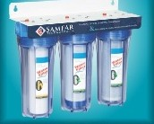
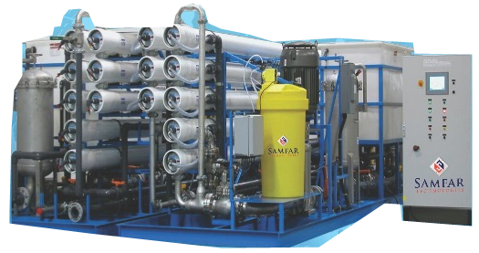
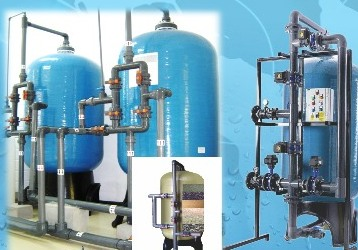
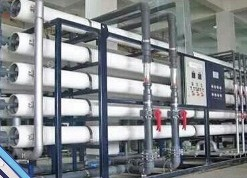
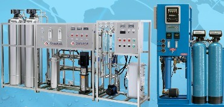
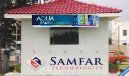
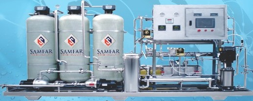
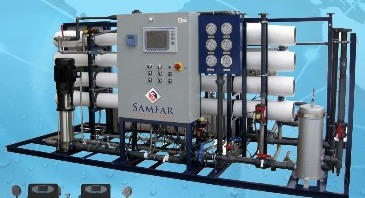
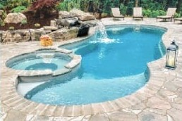
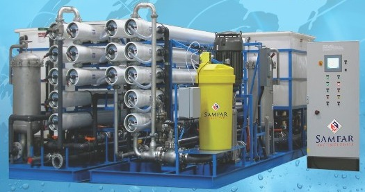

Domestic
Drinking water & whole-house filters
Multi-stage cartridge filters, UV models, domestic RO and whole-house ultrafiltration.
Ask about home filtersWater treatment equipment · Lahore, Pakistan
Samfar Technologies manufactures water filtration systems for homes, commercial facilities, communities and industrial plants.

01 / Equipment portfolio
Explore equipment from the Samfar catalogue, from kitchen filters to reverse osmosis plants for industrial feedwater.

Domestic
Multi-stage cartridge filters, UV models, domestic RO and whole-house ultrafiltration.
Ask about home filters
Commercial / Industrial
Media and cartridge filtration for suspended solids, available for standalone treatment or plant pretreatment.
Ask about filtration
Commercial / Industrial
RO systems for commercial and industrial treatment, including brackish water and seawater applications.
Ask about RO plants
Commercial / Industrial
Ion-exchange systems for reducing water hardness, with manual and automatic valve options.
Ask about softeners
Commercial / Community
Filtration plants and prefabricated treatment rooms for residential colonies and community water centres.
Ask about community plants
Industrial
RO control panels, membranes, filter media, treatment chemicals and lab testing equipment.
Ask about components02 / Applications
Water source, demand and intended use help determine which equipment fits. Here are some of the applications covered in the Samfar catalogue.

Agriculture
Reverse osmosis plants for farm water supplies.

Recreation
Pool filtration and water treatment equipment.

From the Samfar equipment catalogue03 / About Samfar
Samfar Technologies, presented in the catalogue by Fardeen Trading Company, manufactures and fabricates water purification equipment in Lahore. Its range covers household filtration, commercial systems and industrial treatment plants.
Contact the team to discuss your water source, daily demand and how the treated water will be used. If you have a recent water test, include it when you get in touch.
Get in touch04 / Sales enquiries
Share your application and approximate water demand so the Samfar team can discuss equipment options with you.
+92 321 8445855 +92 300 8445855 aquajewel786@gmail.com Factory on Shalimar Link Road, opposite Total Petrol Pump, behind Popy Charga House, Mughal Pura, Lahore